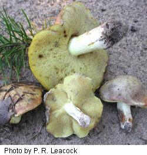
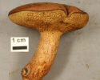
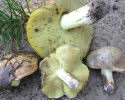

This guide applies to the Chicago Region and is not complete for other regions.
Guide to Suillus
This genus of boletes is mostly associated with conifers, such as pines and larch. To find a variety of species one needs to go to pine plantations or areas of native conifers, such as jack pine and white pine near Lake Michigan. In the Chicago Region we have the atypical Suillus castanellus that has a dry cap, short decurrent pores, and is found with oak trees. The genus Fuscoboletinus has been merged with Suillus.
The following key is adapted from the bolete key by Wyatt Gaswick.
| Key Choice | Go to | ||
|---|---|---|---|
| 1a. Stem smooth, or with reticulation (netlike pattern). | 2 | ||
| 1b. Stem with a ring or resinous dots, or ornamented. | 3 | ||
| 2a. Cap dry. Stem brown. Pores somewhat decurrent. Found with oak. |  | Suillus castanellus | |
| 2b. Cap viscid to slimy. Stem whitish. Found with pine. |  | Suillus brevipes | |
| 3a. Stem with a ring, ring often gelatinous. | 4 | ||
| 3b. Stem without a distinct ring. | 8 | ||
| 4a. Flesh bruising pink to brown when exposed. | 5 | ||
| 4b. Flesh not bruising when exposed. | 6 | ||
| 5a. Cap brownish to yellowish to olive. | Suillus flavidus | ||
| 5b. Cap pinkish-tan or purplish-tan, not yellowish. (not yet recorded for Chicago) | Suillus subalutaceus | ||
| 6a. Pores radially arranged or elongated. | Suillus glandulosus | ||
| 6b. Pores angular. | 7 | ||
| 7a. Cap yellowish to pale brown, cap slime tastes acidic. | Suillus intermedius | ||
| 7b. Cap usually darker, cap slime not acidic if present. | Suillus luteus | ||
| 8a. Pores bruising reddish to brownish. Cap with reddish flecks or patches. Under 5-needle pine. | Suillus americanus | ||
| 8b. Pores unchanging when bruised. | 9 | ||
| 9a. Cap yellow to orange with appressed brownish fibers. | Suillus subaureus | ||
| 9b. Not as above. | 10 | ||
| 10a. Resinous dots on stem conspicuous, brownish. | Suillus granulatus subsp. snellii | ||
| 10b. Resinous dots faint. | Suillus brevipes | ||